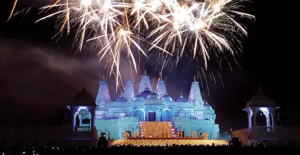

Georgia's Living Canvas
From vibrant murals in bustling cities to sacred folk traditions preserved over centuries, Georgia’s artistic spirit is as diverse as its people. Here, art is not confined to galleries — it lives on street corners, in coastal communities, and deep in the rural South.
Street Art with a Voice

In cities like Atlanta, street art thrives as a dynamic form of expression, giving voice to social movements, local pride, and bold creativity. Neighborhoods like Cabbagetown and the Atlanta BeltLine have become open-air galleries, where walls burst with color and meaning, turning public space into a stage for community stories.
The Gullah Geechee Legacy

Along Georgia’s coastal lowlands, the Gullah Geechee people — descendants of enslaved Africans — preserve a cultural legacy rich in oral tradition, craftsmanship, music, and cuisine. Their unique artistic expressions, from sweetgrass basketry to spiritual songs and folktales, are living reminders of resilience and identity, echoing through the barrier islands and beyond.
Pasaquan: A Visionary Wonderland
Just outside Buena Vista lies one of Georgia’s most extraordinary artistic landmarks — Pasaquan, a psychedelic folk art compound created by self-taught artist Eddie Owens Martin, also known as St. EOM. With its kaleidoscopic walls, spiritual symbolism, and surreal architecture, Pasaquan is a testament to Georgia’s vibrant outsider art scene and the boundless power of imagination.
Whether grounded in history, inspired by activism, or born of visionary minds, the art of Georgia is a vivid celebration of the state’s soul.